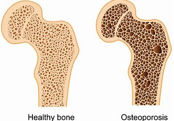

Healthy Bone Density Tips

-
Eating a spoonful of this every day will strengthen your bones! Here are the products that strengthen our body bones. A spoonful of these daily will strengthen the bones.
-
Milk is rich in calcium, phosphorus, magnesium and vitamin D, so it is important to drink milk daily.
-
Yogurt Yogurt is high in calcium along with milk. It is rich in Vitamin B6, 12, Calcium and Protein which strengthen the bones.
-
Tofu Soy foods have bone-strengthening properties. If you add half a cup of soy to your daily diet, the isoflavones add strength to the body, including the calcium and plant content.It contains vitamins B1, D and zinc which are essential for bone Sesame
seeds Collard lettuce It contains nutrients such as vitamin K, omega-3 fatty acids and magnesium
- Spinach Spinach is also high in calcium. It is also rich in iron, fiber, vitamins and magnesium. Adding this to the diet will also strengthen the bones White beans White beans are rich in protein, fiber and phosphorus.